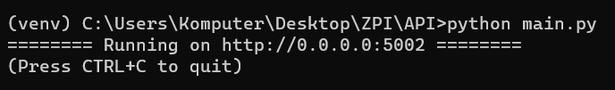
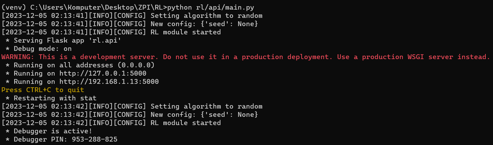
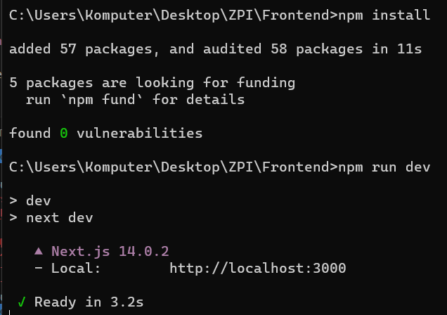
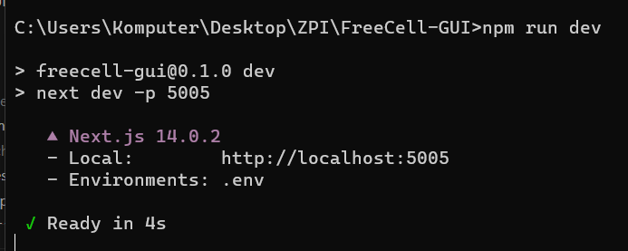

How to setup the framework
Prerequisites
To run the program you need the following software installed:
Docker Compose (optional)
Setup
There are two possible ways to setup the framework:
Manually setting up the whole framework
Using Docker Compose to automatically setup the whole framework
Setup (manual)
To manually setup the whole framework you’ll need to setup these modules:
API
RL
Frontend
Visualisation (optional)
After setting up all the modules you will be able to run the framework any time
API setup
To setup API you’ll need to perform the following steps:
open terminal
git clone https://github.com/ZPI-2023-IST/API
cd API
pip install -r requirements.txt
pip install git+https://github.com/ZPI-2023-IST/FreeCell.git (installing game)
pip install git+https://github.com/ZPI-2023-IST/Translator.git (installing translator)
After performing all the steps run python main.py in the terminal. You should see the following screen
{kind=link}
If you see an error please try again from the start. If that doesn’t solve the issue please contact us.
RL setup
To setup RL you’ll need to perform the following steps:
open terminal
git clone https://github.com/ZPI-2023-IST/RL
cd RL
pip install -e .
NOTE - to run the rl module locally you’ll need to change host (TO DO AFTER PATRYK FINISHES)
After performing all the steps run python rl/api/main.py in the terminal. You should see the following screen
{kind=link}
If you see an error please try again from the start. If that doesn’t solve the issue please contact us.
Frontend setup
To setup Frontend you’ll need to perform the following steps:
open terminal
git clone https://github.com/ZPI-2023-IST/Frontend
cd Frontend
npm install
After performing all the steps run npm run dev in the terminal. You should see the following screen
{kind=link}
Visualisation setup
To setup Visualisation you’ll need to perform the following steps:
open terminal
cd FreeCell-GUI
npm install
After performing all the steps run npm run dev in the terminal. You should see the following screen
{kind=link}
Setup (Docker Compose)
open terminal
cd FreeCell-GUI
docker compose up
TO DO